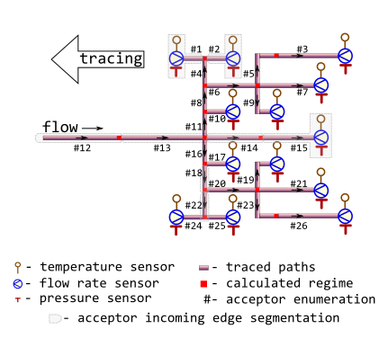
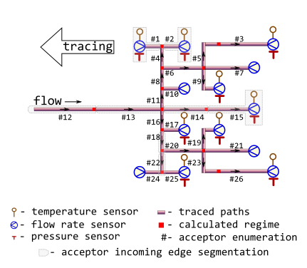

Massively trace backwards thermal-hydraulic regime for district heating network
Source:R/tracebw.R
tracebw.RdTrace values of thermal-hydraulic regime (temperature, pressure, flow rate, and other) in the bunched pipeline against the flow direction using user-provided values of specific heat loss power.
Algorithm also suits for partially measurable district heating network with massive data lack conditions, when there are no temperature and pressure sensor readings on the majority of terminal nodes.
Usage
tracebw(
sender = 6,
acceptor = 7,
temperature = 70,
pressure = pipenostics::mpa_kgf(6),
flow_rate = 20,
d = 100,
len = 72.446,
loss = 78.4,
roughness = 0.001,
inlet = 0.5,
outlet = 1,
method = "romeo",
opinion = "median",
verbose = TRUE,
csv = FALSE,
file = "tracebw.csv"
)Arguments
- sender
identifier of the node which heat carrier flows out. Type: any type that can be painlessly coerced to character by
as.character.- acceptor
identifier of the node which heat carrier flows in. According to topology of test bench considered this identifier should be unique for every row. Type: any type that can be painlessly coerced to character by
as.character.- temperature
Sensor-measured temperature of heat carrier (water) sensor-measured on the terminal acceptor node, [°C]. Use
NA_float_s for (terminal) nodes without temperature sensor. Type:assert_double.- pressure
Sensor-measured absolute pressure of heat carrier (water) inside the pipe (i.e. acceptor's incoming edge), [MPa]. Type:
assert_double.- flow_rate
Sensor-measured amount of heat carrier (water) on terminal node that is transferred by pipe (i.e. acceptor's incoming edge) during a period, [ton/hour]. Type:
assert_double. UseNA_float_s for nodes without flow rate sensor.- d
internal diameter of pipe (i.e.diameter of acceptor's incoming edge), [mm]. Type:
assert_double.- len
pipe length (i.e. length of acceptor's incoming edge), [m]. Type:
assert_double.- loss
user-provided value of specific heat loss power for each pipe, [kcal/m/h]. Values of the argument can be obtained experimentally, or taken from regulatory documents. Type:
assert_double.- roughness
roughness of internal wall of pipe (i.e. acceptor's incoming edge), [m]. Type:
assert_double.- inlet
elevation of pipe inlet, [m]. Type:
assert_double.- outlet
elevation of pipe outlet, [m]. Type:
assert_double.- method
method of determining Darcy friction factor:
romeovatankhanbuzelli
Type:
assert_choice. For more details seedropp.- opinion
method for aggregating values of regime parameters on each node for the next tracing step:
meanvalues of parameter are averaged before the next tracing step
medianmedian of parameter values are used for the next tracing step
Type:
assert_choice.- verbose
logical indicator: should they watch tracing process on console? Type:
assert_flag.- csv
logical indicator: should they incrementally dump results to csv- file while tracing? Type:
assert_flag.- file
name of csv-file which they dump results to. Type:
assert_characterof length 1 that can be used safely to create a file and write to it.
Value
data.frame containing results (detailed log) of tracing in
nodeTracing job. Identifier of the node which regime parameters is calculated for. Values in this vector are identical to those in argument
acceptor. Type:assert_character.tracingTracing job. Identifiers of nodes from which regime parameters are traced for the given node. Identifier
sensoris used when values of regime parameters for the node are sensor readings. Type:assert_character.backwardTracing job. Identifier of tracing direction. It constantly equals to
TRUE. Type:assert_logical.aggregationTracing job. Identifier of aggregation method: span, median, mean, or identity. Type:
assert_character.lossTraced thermal hydraulic regime. Normative specific heat loss power of adjacent pipe, [kcal/m/h]. Type:
assert_double.fluxTraced thermal hydraulic regime. Normative heat flux of adjacent pipe, [W/m^2]. Type:
assert_double.QTraced thermal hydraulic regime. Normative heat loss of adjacent pipe per day, [kcal]. Type:
assert_character.temperatureTraced thermal hydraulic regime. Traced temperature of heat carrier (water) that is associated with the node, [°C]. Type:
assert_double.pressureTraced thermal hydraulic regime. Traced pressure of heat carrier (water) that is associated with the node, [MPa]. Type:
assert_double.flow_rateTraced thermal hydraulic regime. Traced flow rate of heat carrier (water) that is associated with the node, [ton/hour]. Type:
assert_double.jobTracing job. Value of tracing job counter. Type:
assert_count.
Type: assert_data_frame.
Details
They consider the topology of district heating network represented by
m325testbench:

The network may be partially sensor-equipped too:

In latter case no more than two nodes must be equipped with pressure and temperature sensors whereas for other nodes only flow rate sensors must be installed.
Tracing starts from sensor-equipped nodes and goes backwards, i.e against the flow direction.
Though some input arguments are natively vectorized their individual values
all relate to common part of district heating network, i.e. associated with
common object. It is due to isomorphism between vector representation and
directed graph of this network. For more details of isomorphic topology
description see m325testbench.
Before tracing starts for the next node, previously calculated values of thermal-hydraulic parameters are aggregated by either averaging or by median. The latter seems more robust for avoiding strong influence of possible outliers which may come from actual heating transfer anomalies, erroneous sensor readings or wrong pipeline specifications.
Aggregation for values of flow rate at the node is always sum.
See also
Other Regime tracing:
m325tracebw(),
m325tracefw(),
m325traceline(),
tracefw(),
traceline()
Examples
library(pipenostics)
# It is possible to run without specification of argument values:
m325tracebw()
#>
#> 2024-04-02 16:26:28.484752 m325tracebw | start backward tracing; segments 1;
#> 2024-04-02 16:26:28.484752 m325tracebw | start job; job 0;
#> 2024-04-02 16:26:28.484752 m325tracebw | now process; 1 node(s); [7]
#> 2024-04-02 16:26:28.484752 m325tracebw | seen tracing; [1/1] are TP-sensor-equipped;
#> 2024-04-02 16:26:28.484752 m325tracebw | tracing loss;;
#> 2024-04-02 16:26:28.484752 m325tracebw | OK! Specific heat loss power traced from 1 nodes;[7];
#> 2024-04-02 16:26:28.484752 m325tracebw | tracing heat flux;;
#> 2024-04-02 16:26:28.484752 m325tracebw | OK! Heat flux traced from 1 nodes;[7];
#> 2024-04-02 16:26:28.484752 m325tracebw | tracing heat loss per day;;
#> 2024-04-02 16:26:28.484752 m325tracebw | OK! Heat loss per day traced from 1 nodes;[7];
#> 2024-04-02 16:26:28.484752 m325tracebw | tracing temperature;;
#> 2024-04-02 16:26:28.484752 m325tracebw | OK! Temperature traced from 1 nodes;[7];
#> 2024-04-02 16:26:28.484752 m325tracebw | tracing pressure;;
#> 2024-04-02 16:26:28.484752 m325tracebw | OK! Pressure traced from 1 nodes;[7];
#> 2024-04-02 16:26:28.484752 m325tracebw | tracing flow_rate;;
#> 2024-04-02 16:26:28.484752 m325tracebw | finish job; job 0; processed node(s) 1
#> 2024-04-02 16:26:28.484752 m325tracebw | finish backward tracing;;
#> node tracing backward aggregation loss flux Q temperature
#> 1 7 sensor TRUE identity 78.4 279.0696 136314.4 70
#> span 7 sensor TRUE span 0.0 0.0000 0.0 0
#> median 7 sensor TRUE median 78.4 279.0696 136314.4 70
#> mean 7 sensor TRUE mean 78.4 279.0696 136314.4 70
#> pressure flow_rate job
#> 1 0.588399 20 0
#> span 0.000000 20 0
#> median 0.588399 20 0
#> mean 0.588399 20 0
# Consider isomorphic representation of District Heating Network graph:
DHN <- pipenostics::m325testbench
# * Adapt units:
DHN$d <- 1e3*DHN$d # convert [m] to [mm]
# * Adapt node identifiers for ordering representation simplification:
DHN[["sender"]] <- sprintf("N%02i", DHN[["sender"]])
DHN[["acceptor"]] <- sprintf("N%02i", DHN[["acceptor"]])
# * Provided actual values of specific heat loss power (say, field measurements) for each
# pipe in DHN, [kcal/m/h]:
actual_loss <- c(
# acceptor:
96.236, # 1
96.288, # 2
70.584, # 3
116.045, # 4
70.734, # 5
96.211, # 6
78.400, # 7
116.016, # 8
28.115, # 9
24.918, # 10
116.679, # 11
0.000, # 12, may be unmeasured!
153.134, # 13
96.733, # 14
96.600, # 15
116.667, # 16
24.960, # 17
115.923, # 18
28.166, # 19
96.123, # 20
77.824, # 21
115.946, # 22
70.690, # 23
96.184, # 24
96.236, # 25
70.540 # 26
)
# * Remove inappropriate attributes of the graph:
DHN.1 <- DHN[, setdiff(colnames(DHN), c("year", "insulation", "laying", "beta", "exp5k"))]
# * Trace thermal-hydraulic regime for DHN:
tracebw_report <- do.call("tracebw", c(as.list(DHN.1), list(loss = actual_loss)))
#>
#> 2024-04-02 16:26:28.507768 tracebw | start backward tracing; segments 26;
#> 2024-04-02 16:26:28.507768 tracebw | start job; job 0;
#> 2024-04-02 16:26:28.507768 tracebw | now process; 13 node(s); [N01,N02,N03,N07,N09,N10,N15,N17,N19,N21,N24,N25,N26]
#> 2024-04-02 16:26:28.507768 tracebw | seen tracing; [13/13] are TP-sensor-equipped;
#> 2024-04-02 16:26:28.507768 tracebw | tracing loss;;
#> 2024-04-02 16:26:28.507768 tracebw | OK! Specific heat loss power traced from 13 nodes;[N01,N02,N03,N07,N09,N10,N15,N17,N19,N21,N24,N25,N26];
#> 2024-04-02 16:26:28.507768 tracebw | tracing heat flux;;
#> 2024-04-02 16:26:28.507768 tracebw | OK! Heat flux traced from 13 nodes;[N01,N02,N03,N07,N09,N10,N15,N17,N19,N21,N24,N25,N26];
#> 2024-04-02 16:26:28.507768 tracebw | tracing heat loss per day;;
#> 2024-04-02 16:26:28.507768 tracebw | OK! Heat loss per day traced from 13 nodes;[N01,N02,N03,N07,N09,N10,N15,N17,N19,N21,N24,N25,N26];
#> 2024-04-02 16:26:28.507768 tracebw | tracing temperature;;
#> 2024-04-02 16:26:28.507768 tracebw | OK! Temperature traced from 13 nodes;[N01,N02,N03,N07,N09,N10,N15,N17,N19,N21,N24,N25,N26];
#> 2024-04-02 16:26:28.507768 tracebw | tracing pressure;;
#> 2024-04-02 16:26:28.507768 tracebw | OK! Pressure traced from 13 nodes;[N01,N02,N03,N07,N09,N10,N15,N17,N19,N21,N24,N25,N26];
#> 2024-04-02 16:26:28.507768 tracebw | tracing flow_rate;;
#> 2024-04-02 16:26:28.507768 tracebw | finish job; job 0; processed node(s) 13
#> 2024-04-02 16:26:28.507768 tracebw | start job; job 1;
#> 2024-04-02 16:26:28.507768 tracebw | now process; 5 node(s); [N04,N05,N14,N22,N23]
#> 2024-04-02 16:26:28.507768 tracebw | seen tracing; [5/5] are TP-sensor-equipped;
#> 2024-04-02 16:26:28.507768 tracebw | tracing loss;;
#> 2024-04-02 16:26:28.507768 tracebw | OK! Specific heat loss power traced from 5 nodes;[N04,N05,N14,N22,N23];
#> 2024-04-02 16:26:28.507768 tracebw | tracing heat flux;;
#> 2024-04-02 16:26:28.507768 tracebw | OK! Heat flux traced from 5 nodes;[N04,N05,N14,N22,N23];
#> 2024-04-02 16:26:28.507768 tracebw | tracing heat loss per day;;
#> 2024-04-02 16:26:28.507768 tracebw | OK! Heat loss per day traced from 5 nodes;[N04,N05,N14,N22,N23];
#> 2024-04-02 16:26:28.507768 tracebw | tracing temperature;;
#> 2024-04-02 16:26:28.507768 tracebw | OK! Temperature traced from 5 nodes;[N04,N05,N14,N22,N23];
#> 2024-04-02 16:26:28.507768 tracebw | tracing pressure;;
#> 2024-04-02 16:26:28.507768 tracebw | OK! Pressure traced from 5 nodes;[N04,N05,N14,N22,N23];
#> 2024-04-02 16:26:28.507768 tracebw | tracing flow_rate;;
#> 2024-04-02 16:26:28.507768 tracebw | finish job; job 1; processed node(s) 5
#> 2024-04-02 16:26:28.507768 tracebw | start job; job 2;
#> 2024-04-02 16:26:28.507768 tracebw | now process; 2 node(s); [N06,N20]
#> 2024-04-02 16:26:28.507768 tracebw | seen tracing; [2/2] are TP-sensor-equipped;
#> 2024-04-02 16:26:28.507768 tracebw | tracing loss;;
#> 2024-04-02 16:26:28.507768 tracebw | OK! Specific heat loss power traced from 2 nodes;[N06,N20];
#> 2024-04-02 16:26:28.507768 tracebw | tracing heat flux;;
#> 2024-04-02 16:26:28.507768 tracebw | OK! Heat flux traced from 2 nodes;[N06,N20];
#> 2024-04-02 16:26:28.507768 tracebw | tracing heat loss per day;;
#> 2024-04-02 16:26:28.507768 tracebw | OK! Heat loss per day traced from 2 nodes;[N06,N20];
#> 2024-04-02 16:26:28.507768 tracebw | tracing temperature;;
#> 2024-04-02 16:26:28.507768 tracebw | OK! Temperature traced from 2 nodes;[N06,N20];
#> 2024-04-02 16:26:28.507768 tracebw | tracing pressure;;
#> 2024-04-02 16:26:28.507768 tracebw | OK! Pressure traced from 2 nodes;[N06,N20];
#> 2024-04-02 16:26:28.507768 tracebw | tracing flow_rate;;
#> 2024-04-02 16:26:28.507768 tracebw | finish job; job 2; processed node(s) 2
#> 2024-04-02 16:26:28.507768 tracebw | start job; job 3;
#> 2024-04-02 16:26:28.507768 tracebw | now process; 2 node(s); [N08,N18]
#> 2024-04-02 16:26:28.507768 tracebw | seen tracing; [2/2] are TP-sensor-equipped;
#> 2024-04-02 16:26:28.507768 tracebw | tracing loss;;
#> 2024-04-02 16:26:28.507768 tracebw | OK! Specific heat loss power traced from 2 nodes;[N08,N18];
#> 2024-04-02 16:26:28.507768 tracebw | tracing heat flux;;
#> 2024-04-02 16:26:28.507768 tracebw | OK! Heat flux traced from 2 nodes;[N08,N18];
#> 2024-04-02 16:26:28.507768 tracebw | tracing heat loss per day;;
#> 2024-04-02 16:26:28.507768 tracebw | OK! Heat loss per day traced from 2 nodes;[N08,N18];
#> 2024-04-02 16:26:28.507768 tracebw | tracing temperature;;
#> 2024-04-02 16:26:28.507768 tracebw | OK! Temperature traced from 2 nodes;[N08,N18];
#> 2024-04-02 16:26:28.507768 tracebw | tracing pressure;;
#> 2024-04-02 16:26:28.507768 tracebw | OK! Pressure traced from 2 nodes;[N08,N18];
#> 2024-04-02 16:26:28.507768 tracebw | tracing flow_rate;;
#> 2024-04-02 16:26:28.507768 tracebw | finish job; job 3; processed node(s) 2
#> 2024-04-02 16:26:28.507768 tracebw | start job; job 4;
#> 2024-04-02 16:26:28.507768 tracebw | now process; 2 node(s); [N11,N16]
#> 2024-04-02 16:26:28.507768 tracebw | seen tracing; [2/2] are TP-sensor-equipped;
#> 2024-04-02 16:26:28.507768 tracebw | tracing loss;;
#> 2024-04-02 16:26:28.507768 tracebw | OK! Specific heat loss power traced from 2 nodes;[N11,N16];
#> 2024-04-02 16:26:28.507768 tracebw | tracing heat flux;;
#> 2024-04-02 16:26:28.507768 tracebw | OK! Heat flux traced from 2 nodes;[N11,N16];
#> 2024-04-02 16:26:28.507768 tracebw | tracing heat loss per day;;
#> 2024-04-02 16:26:28.507768 tracebw | OK! Heat loss per day traced from 2 nodes;[N11,N16];
#> 2024-04-02 16:26:28.507768 tracebw | tracing temperature;;
#> 2024-04-02 16:26:28.507768 tracebw | OK! Temperature traced from 2 nodes;[N11,N16];
#> 2024-04-02 16:26:28.507768 tracebw | tracing pressure;;
#> 2024-04-02 16:26:28.507768 tracebw | OK! Pressure traced from 2 nodes;[N11,N16];
#> 2024-04-02 16:26:28.507768 tracebw | tracing flow_rate;;
#> 2024-04-02 16:26:28.507768 tracebw | finish job; job 4; processed node(s) 2
#> 2024-04-02 16:26:28.507768 tracebw | start job; job 5;
#> 2024-04-02 16:26:28.507768 tracebw | now process; 1 node(s); [N13]
#> 2024-04-02 16:26:28.507768 tracebw | seen tracing; [1/1] are TP-sensor-equipped;
#> 2024-04-02 16:26:28.507768 tracebw | tracing loss;;
#> 2024-04-02 16:26:28.507768 tracebw | OK! Specific heat loss power traced from 1 nodes;[N13];
#> 2024-04-02 16:26:28.507768 tracebw | tracing heat flux;;
#> 2024-04-02 16:26:28.507768 tracebw | OK! Heat flux traced from 1 nodes;[N13];
#> 2024-04-02 16:26:28.507768 tracebw | tracing heat loss per day;;
#> 2024-04-02 16:26:28.507768 tracebw | OK! Heat loss per day traced from 1 nodes;[N13];
#> 2024-04-02 16:26:28.507768 tracebw | tracing temperature;;
#> 2024-04-02 16:26:28.507768 tracebw | OK! Temperature traced from 1 nodes;[N13];
#> 2024-04-02 16:26:28.507768 tracebw | tracing pressure;;
#> 2024-04-02 16:26:28.507768 tracebw | OK! Pressure traced from 1 nodes;[N13];
#> 2024-04-02 16:26:28.507768 tracebw | tracing flow_rate;;
#> 2024-04-02 16:26:28.507768 tracebw | finish job; job 5; processed node(s) 1
#> 2024-04-02 16:26:28.507768 tracebw | start job; job 6;
#> 2024-04-02 16:26:28.507768 tracebw | now process; 1 node(s); [N12]
#> 2024-04-02 16:26:28.507768 tracebw | seen tracing; [1/1] are TP-sensor-equipped;
#> 2024-04-02 16:26:28.507768 tracebw | tracing loss;;
#> 2024-04-02 16:26:28.507768 tracebw | OK! Specific heat loss power traced from 1 nodes;[N12];
#> 2024-04-02 16:26:28.507768 tracebw | tracing heat flux;;
#> 2024-04-02 16:26:28.507768 tracebw | OK! Heat flux traced from 1 nodes;[N12];
#> 2024-04-02 16:26:28.507768 tracebw | tracing heat loss per day;;
#> 2024-04-02 16:26:28.507768 tracebw | OK! Heat loss per day traced from 1 nodes;[N12];
#> 2024-04-02 16:26:28.507768 tracebw | tracing temperature;;
#> 2024-04-02 16:26:28.507768 tracebw | OK! Temperature traced from 1 nodes;[N12];
#> 2024-04-02 16:26:28.507768 tracebw | tracing pressure;;
#> 2024-04-02 16:26:28.507768 tracebw | OK! Pressure traced from 1 nodes;[N12];
#> 2024-04-02 16:26:28.507768 tracebw | tracing flow_rate;;
#> 2024-04-02 16:26:28.507768 tracebw | finish job; job 6; processed node(s) 1
#> 2024-04-02 16:26:28.507768 tracebw | finish backward tracing;;
# * If the actual values of specific heat loss power presented above are close
# to those in Minenergo-325, then the results of regime tracing match the
# normative procedure:
m325_report <- do.call("m325tracebw", DHN)
#>
#> 2024-04-02 16:26:28.59587 m325tracebw | start backward tracing; segments 26;
#> 2024-04-02 16:26:28.59587 m325tracebw | start job; job 0;
#> 2024-04-02 16:26:28.59587 m325tracebw | now process; 13 node(s); [N01,N02,N03,N07,N09,N10,N15,N17,N19,N21,N24,N25,N26]
#> 2024-04-02 16:26:28.59587 m325tracebw | seen tracing; [13/13] are TP-sensor-equipped;
#> 2024-04-02 16:26:28.59587 m325tracebw | tracing loss;;
#> 2024-04-02 16:26:28.59587 m325tracebw | OK! Specific heat loss power traced from 13 nodes;[N01,N02,N03,N07,N09,N10,N15,N17,N19,N21,N24,N25,N26];
#> 2024-04-02 16:26:28.59587 m325tracebw | tracing heat flux;;
#> 2024-04-02 16:26:28.59587 m325tracebw | OK! Heat flux traced from 13 nodes;[N01,N02,N03,N07,N09,N10,N15,N17,N19,N21,N24,N25,N26];
#> 2024-04-02 16:26:28.59587 m325tracebw | tracing heat loss per day;;
#> 2024-04-02 16:26:28.59587 m325tracebw | OK! Heat loss per day traced from 13 nodes;[N01,N02,N03,N07,N09,N10,N15,N17,N19,N21,N24,N25,N26];
#> 2024-04-02 16:26:28.59587 m325tracebw | tracing temperature;;
#> 2024-04-02 16:26:28.59587 m325tracebw | OK! Temperature traced from 13 nodes;[N01,N02,N03,N07,N09,N10,N15,N17,N19,N21,N24,N25,N26];
#> 2024-04-02 16:26:28.59587 m325tracebw | tracing pressure;;
#> 2024-04-02 16:26:28.59587 m325tracebw | OK! Pressure traced from 13 nodes;[N01,N02,N03,N07,N09,N10,N15,N17,N19,N21,N24,N25,N26];
#> 2024-04-02 16:26:28.59587 m325tracebw | tracing flow_rate;;
#> 2024-04-02 16:26:28.59587 m325tracebw | finish job; job 0; processed node(s) 13
#> 2024-04-02 16:26:28.59587 m325tracebw | start job; job 1;
#> 2024-04-02 16:26:28.59587 m325tracebw | now process; 5 node(s); [N04,N05,N14,N22,N23]
#> 2024-04-02 16:26:28.59587 m325tracebw | seen tracing; [5/5] are TP-sensor-equipped;
#> 2024-04-02 16:26:28.59587 m325tracebw | tracing loss;;
#> 2024-04-02 16:26:28.59587 m325tracebw | OK! Specific heat loss power traced from 5 nodes;[N04,N05,N14,N22,N23];
#> 2024-04-02 16:26:28.59587 m325tracebw | tracing heat flux;;
#> 2024-04-02 16:26:28.59587 m325tracebw | OK! Heat flux traced from 5 nodes;[N04,N05,N14,N22,N23];
#> 2024-04-02 16:26:28.59587 m325tracebw | tracing heat loss per day;;
#> 2024-04-02 16:26:28.59587 m325tracebw | OK! Heat loss per day traced from 5 nodes;[N04,N05,N14,N22,N23];
#> 2024-04-02 16:26:28.59587 m325tracebw | tracing temperature;;
#> 2024-04-02 16:26:28.59587 m325tracebw | OK! Temperature traced from 5 nodes;[N04,N05,N14,N22,N23];
#> 2024-04-02 16:26:28.59587 m325tracebw | tracing pressure;;
#> 2024-04-02 16:26:28.59587 m325tracebw | OK! Pressure traced from 5 nodes;[N04,N05,N14,N22,N23];
#> 2024-04-02 16:26:28.59587 m325tracebw | tracing flow_rate;;
#> 2024-04-02 16:26:28.59587 m325tracebw | finish job; job 1; processed node(s) 5
#> 2024-04-02 16:26:28.59587 m325tracebw | start job; job 2;
#> 2024-04-02 16:26:28.59587 m325tracebw | now process; 2 node(s); [N06,N20]
#> 2024-04-02 16:26:28.59587 m325tracebw | seen tracing; [2/2] are TP-sensor-equipped;
#> 2024-04-02 16:26:28.59587 m325tracebw | tracing loss;;
#> 2024-04-02 16:26:28.59587 m325tracebw | OK! Specific heat loss power traced from 2 nodes;[N06,N20];
#> 2024-04-02 16:26:28.59587 m325tracebw | tracing heat flux;;
#> 2024-04-02 16:26:28.59587 m325tracebw | OK! Heat flux traced from 2 nodes;[N06,N20];
#> 2024-04-02 16:26:28.59587 m325tracebw | tracing heat loss per day;;
#> 2024-04-02 16:26:28.59587 m325tracebw | OK! Heat loss per day traced from 2 nodes;[N06,N20];
#> 2024-04-02 16:26:28.59587 m325tracebw | tracing temperature;;
#> 2024-04-02 16:26:28.59587 m325tracebw | OK! Temperature traced from 2 nodes;[N06,N20];
#> 2024-04-02 16:26:28.59587 m325tracebw | tracing pressure;;
#> 2024-04-02 16:26:28.59587 m325tracebw | OK! Pressure traced from 2 nodes;[N06,N20];
#> 2024-04-02 16:26:28.59587 m325tracebw | tracing flow_rate;;
#> 2024-04-02 16:26:28.59587 m325tracebw | finish job; job 2; processed node(s) 2
#> 2024-04-02 16:26:28.59587 m325tracebw | start job; job 3;
#> 2024-04-02 16:26:28.59587 m325tracebw | now process; 2 node(s); [N08,N18]
#> 2024-04-02 16:26:28.59587 m325tracebw | seen tracing; [2/2] are TP-sensor-equipped;
#> 2024-04-02 16:26:28.59587 m325tracebw | tracing loss;;
#> 2024-04-02 16:26:28.59587 m325tracebw | OK! Specific heat loss power traced from 2 nodes;[N08,N18];
#> 2024-04-02 16:26:28.59587 m325tracebw | tracing heat flux;;
#> 2024-04-02 16:26:28.59587 m325tracebw | OK! Heat flux traced from 2 nodes;[N08,N18];
#> 2024-04-02 16:26:28.59587 m325tracebw | tracing heat loss per day;;
#> 2024-04-02 16:26:28.59587 m325tracebw | OK! Heat loss per day traced from 2 nodes;[N08,N18];
#> 2024-04-02 16:26:28.59587 m325tracebw | tracing temperature;;
#> 2024-04-02 16:26:28.59587 m325tracebw | OK! Temperature traced from 2 nodes;[N08,N18];
#> 2024-04-02 16:26:28.59587 m325tracebw | tracing pressure;;
#> 2024-04-02 16:26:28.59587 m325tracebw | OK! Pressure traced from 2 nodes;[N08,N18];
#> 2024-04-02 16:26:28.59587 m325tracebw | tracing flow_rate;;
#> 2024-04-02 16:26:28.59587 m325tracebw | finish job; job 3; processed node(s) 2
#> 2024-04-02 16:26:28.59587 m325tracebw | start job; job 4;
#> 2024-04-02 16:26:28.59587 m325tracebw | now process; 2 node(s); [N11,N16]
#> 2024-04-02 16:26:28.59587 m325tracebw | seen tracing; [2/2] are TP-sensor-equipped;
#> 2024-04-02 16:26:28.59587 m325tracebw | tracing loss;;
#> 2024-04-02 16:26:28.59587 m325tracebw | OK! Specific heat loss power traced from 2 nodes;[N11,N16];
#> 2024-04-02 16:26:28.59587 m325tracebw | tracing heat flux;;
#> 2024-04-02 16:26:28.59587 m325tracebw | OK! Heat flux traced from 2 nodes;[N11,N16];
#> 2024-04-02 16:26:28.59587 m325tracebw | tracing heat loss per day;;
#> 2024-04-02 16:26:28.59587 m325tracebw | OK! Heat loss per day traced from 2 nodes;[N11,N16];
#> 2024-04-02 16:26:28.59587 m325tracebw | tracing temperature;;
#> 2024-04-02 16:26:28.59587 m325tracebw | OK! Temperature traced from 2 nodes;[N11,N16];
#> 2024-04-02 16:26:28.59587 m325tracebw | tracing pressure;;
#> 2024-04-02 16:26:28.59587 m325tracebw | OK! Pressure traced from 2 nodes;[N11,N16];
#> 2024-04-02 16:26:28.59587 m325tracebw | tracing flow_rate;;
#> 2024-04-02 16:26:28.59587 m325tracebw | finish job; job 4; processed node(s) 2
#> 2024-04-02 16:26:28.59587 m325tracebw | start job; job 5;
#> 2024-04-02 16:26:28.59587 m325tracebw | now process; 1 node(s); [N13]
#> 2024-04-02 16:26:28.59587 m325tracebw | seen tracing; [1/1] are TP-sensor-equipped;
#> 2024-04-02 16:26:28.59587 m325tracebw | tracing loss;;
#> 2024-04-02 16:26:28.59587 m325tracebw | OK! Specific heat loss power traced from 1 nodes;[N13];
#> 2024-04-02 16:26:28.59587 m325tracebw | tracing heat flux;;
#> 2024-04-02 16:26:28.59587 m325tracebw | OK! Heat flux traced from 1 nodes;[N13];
#> 2024-04-02 16:26:28.59587 m325tracebw | tracing heat loss per day;;
#> 2024-04-02 16:26:28.59587 m325tracebw | OK! Heat loss per day traced from 1 nodes;[N13];
#> 2024-04-02 16:26:28.59587 m325tracebw | tracing temperature;;
#> 2024-04-02 16:26:28.59587 m325tracebw | OK! Temperature traced from 1 nodes;[N13];
#> 2024-04-02 16:26:28.59587 m325tracebw | tracing pressure;;
#> 2024-04-02 16:26:28.59587 m325tracebw | OK! Pressure traced from 1 nodes;[N13];
#> 2024-04-02 16:26:28.59587 m325tracebw | tracing flow_rate;;
#> 2024-04-02 16:26:28.59587 m325tracebw | finish job; job 5; processed node(s) 1
#> 2024-04-02 16:26:28.59587 m325tracebw | start job; job 6;
#> 2024-04-02 16:26:28.59587 m325tracebw | now process; 1 node(s); [N12]
#> 2024-04-02 16:26:28.59587 m325tracebw | seen tracing; [1/1] are TP-sensor-equipped;
#> 2024-04-02 16:26:28.59587 m325tracebw | tracing loss;;
#> 2024-04-02 16:26:28.59587 m325tracebw | OK! Specific heat loss power traced from 1 nodes;[N12];
#> 2024-04-02 16:26:28.59587 m325tracebw | tracing heat flux;;
#> 2024-04-02 16:26:28.59587 m325tracebw | OK! Heat flux traced from 1 nodes;[N12];
#> 2024-04-02 16:26:28.59587 m325tracebw | tracing heat loss per day;;
#> 2024-04-02 16:26:28.59587 m325tracebw | OK! Heat loss per day traced from 1 nodes;[N12];
#> 2024-04-02 16:26:28.59587 m325tracebw | tracing temperature;;
#> 2024-04-02 16:26:28.59587 m325tracebw | OK! Temperature traced from 1 nodes;[N12];
#> 2024-04-02 16:26:28.59587 m325tracebw | tracing pressure;;
#> 2024-04-02 16:26:28.59587 m325tracebw | OK! Pressure traced from 1 nodes;[N12];
#> 2024-04-02 16:26:28.59587 m325tracebw | tracing flow_rate;;
#> 2024-04-02 16:26:28.59587 m325tracebw | finish job; job 6; processed node(s) 1
#> 2024-04-02 16:26:28.59587 m325tracebw | finish backward tracing;;
stopifnot(
all.equal(tracebw_report$temperature, m325_report$temperature, tolerance = 1e-4),
all.equal(tracebw_report$pressure , m325_report$pressure , tolerance = 1e-4),
all.equal(tracebw_report$flow_rate , m325_report$flow_rate , tolerance = 1e-4)
)